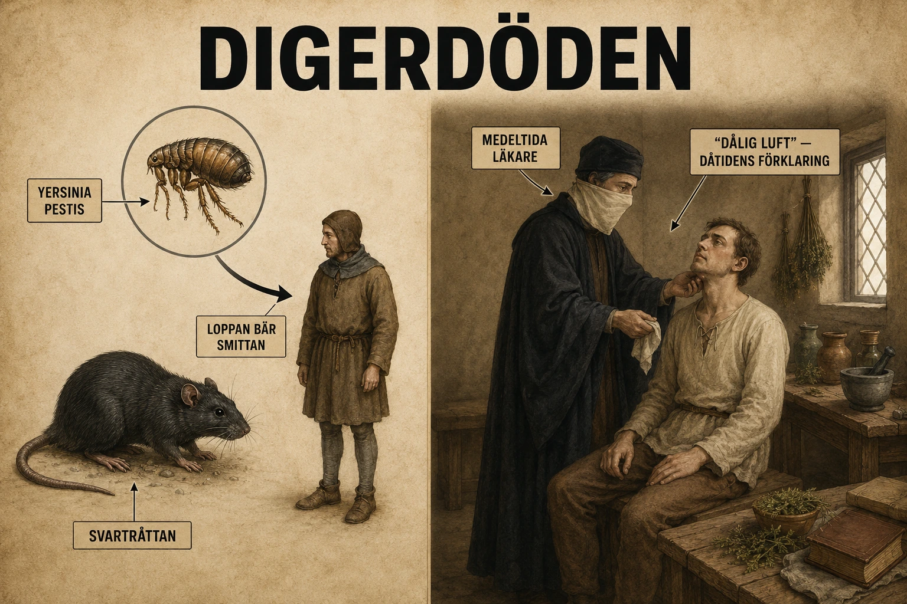
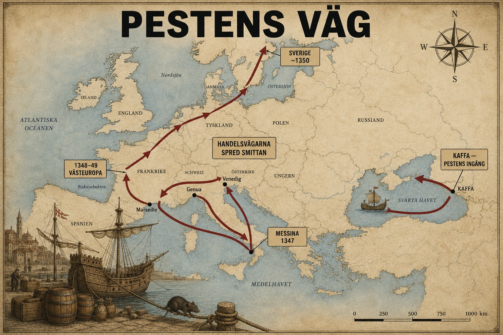
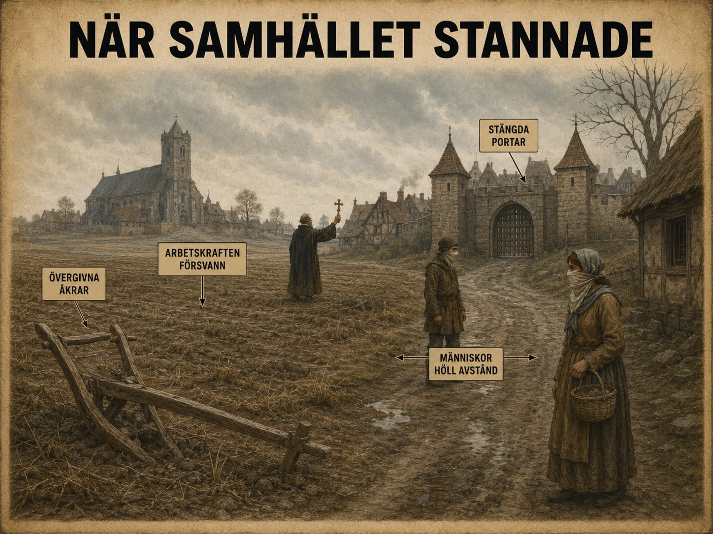

Digerdöden var namnet på den stora pestepidemi som drabbade Europa i mitten av 1300-talet. Ordet diger betyder ungefär "stor" eller "väldig". Digerdöden betyder alltså "den stora döden" — och namnet passar. Mellan åren 1347 och 1351 spreds pesten över stora delar av Europa och dödade en mycket stor del av befolkningen. Många historiker räknar med att minst en tredjedel av Europas invånare dog.
Vad var det egentligen?
På medeltiden trodde många att pesten kom från dålig luft, Guds straff eller förgiftat vatten. I dag vet vi bättre. Sjukdomen orsakas av en bakterie som heter Yersinia pestis.
Bakterien kunde spridas mellan djur och människor — framför allt genom loppor som först hade sugit blod från smittade gnagare, som råttor. När lopporna sedan bet människor följde bakterien med in i kroppen.

Pesten kom från en bakterie. Den spreds genom loppor som bet både råttor och människor. Medeltidens läkare visste inte detta.
Tre former av pest
Böldpest var vanligast. Den gav stora, smärtsamma svullnader (bölder) i lymfkörtlarna — i armhålorna, på halsen eller i ljumskarna. Den sjuke fick hög feber, frossa och blev mycket svag.
Blodpest spred sig i blodet och kunde ge inre blödningar och mörka fläckar på huden.
Lungpest angrep lungorna och kunde spridas direkt mellan människor genom hosta.
Många dog efter bara några dagar. En person kunde vara frisk en vecka och död nästa.
Varför var den så skrämmande?
Det värsta var att människor inte förstod vad som orsakade sjukdomen. De hade inga mikroskop, ingen kunskap om bakterier och inga antibiotika. Många försökte skydda sig med böner, rökelse eller genom att undvika sjuka. En del metoder hjälpte lite — som att hålla avstånd — men nästan ingen förstod varför.
När så många dog på kort tid blandades rädsla, religion, rykten och desperation. Människor började leta efter förklaringar — och ibland efter någon att skylla på.
Digerdöden var namnet på den stora pestpandemi som drabbade Europa under mitten av 1300-talet. Ordet diger betyder ungefär stor eller väldig, så digerdöden betyder alltså den stora döden. Namnet passar, eftersom sjukdomen blev en av de värsta katastroferna i Europas historia. Mellan åren 1347 och 1351 spreds pesten över stora delar av Europa och dödade en mycket stor del av befolkningen. Många historiker brukar räkna med att minst en tredjedel av Europas invånare dog, och på vissa platser ännu fler. Omkring 25 miljoner människor uppskattas ha dött i Europa under denna våg av pesten.
Pestens biologi — och samtidens missförstånd — i samma bild. Bakterien Yersinia pestis kunde inte ses förrän mikroskopet uppfanns århundraden senare. Medeltidens läkare arbetade med teorin om "dålig luft" som förklaring, och försökte skydda sig med örter och avstånd. De gjorde ibland rätt, utan att veta varför.
Pesten orsakades inte av dålig luft, Guds straff eller förgiftat vatten, även om många människor på medeltiden trodde det. I dag vet vi att sjukdomen orsakas av en bakterie som heter Yersinia pestis. Denna bakterie kan spridas mellan djur och människor, framför allt genom loppor som tidigare sugit blod från smittade gnagare, till exempel råttor. När lopporna bet människor kunde bakterien följa med in i kroppen.
Den vanligaste formen under digerdöden var troligen böldpest. Den kallades så eftersom den kunde ge stora, smärtsamma svullnader i lymfkörtlarna. Sådana svullnader kunde sitta i armhålorna, på halsen eller i ljumskarna. Den sjuke kunde också få hög feber, frossa, huvudvärk, värk i kroppen och bli mycket svag. Många dog efter bara några dagar. För människor på medeltiden måste sjukdomen ha verkat nästan ofattbar: en person kunde vara frisk ena veckan och död nästa.
Det fanns också andra former av pest. Blodpest kunde sprida sig i blodet och leda till inre blödningar, mörka fläckar på huden och snabb död. Lungpest angrep lungorna och kunde spridas direkt mellan människor genom hosta och små droppar i luften. Lungpest var extra farlig eftersom den kunde gå mycket snabbt från människa till människa, särskilt där människor bodde trångt. Modern forskning beskriver att böldpest främst kopplas till loppor, medan lungpest kan spridas genom droppsmitta vid nära kontakt.
Det som gjorde digerdöden så skrämmande var att människor inte förstod vad som orsakade sjukdomen. De hade inga mikroskop, ingen kunskap om bakterier och inga antibiotika. Många försökte skydda sig med böner, processioner, dofter, rökelse eller genom att undvika sjuka personer. Vissa metoder kunde hjälpa lite, till exempel att hålla avstånd från smittade, men de flesta förstod inte varför det hjälpte. Därför blandades rädsla, religion, rykten och desperation. När så många dog på kort tid började människor leta efter förklaringar — och ibland efter syndabockar.
En osynlig fiende
För att förstå digerdöden måste man förstå något som ingen på 1300-talet kunde veta: fienden var osynlig. Den var mindre än något öga kunde se, mindre än något instrument då kunde mäta. Den levde i blodet hos råttor, i magen på loppor, i lungorna hos de sjuka. Den hette — fast ingen visste det förrän 1894 — Yersinia pestis.
Att fienden var osynlig är nyckeln till nästan allt som hände. När man inte kan se orsaken till en katastrof, fyller man tomrummet med det man har: religion, rykten, rädsla. Digerdödens historia är därför inte bara en historia om en bakterie. Den är en historia om vad människor gör när de inte förstår.
Bakterien och dess väg in i kroppen
Yersinia pestis är en bakterie som normalt lever bland gnagare. I sig själv "vill" den inget — den följer bara biologins logik. Men dess livscykel råkade vara perfekt utformad för att skapa en katastrof.
Bakterien bärs ofta av loppor. När en loppa suger blod från en smittad råtta får den i sig bakterien. Inuti loppans mage förökar sig bakterierna så kraftigt att de kan blockera loppans matsmältning. Den hungriga loppan biter då allt vildare — och varje bett kan föra över bakterien till ett nytt offer, människa eller djur. På så sätt blev den lilla loppan en bärare av massdöd.
När råttorna i ett område dog av pesten sökte lopporna nya värddjur. Och i en medeltida stad fanns det gott om alternativ: människor, som bodde tätt, sov på halm och förvarade säd som lockade råttor.
De tre ansiktena
Pesten visade sig i tre former, och skillnaden mellan dem spelade roll för hur den spreds.
Böldpest var den vanligaste. Bakterien samlades i lymfkörtlarna och bildade svullnader som kallades bubon — därav det engelska namnet bubonic plague. Dessa kunde bli stora som ägg, svarta och oerhört smärtsamma. Böldpest spreds främst via loppor och dödade kanske hälften till två tredjedelar av de smittade.
Blodpest uppstod när bakterien nådde blodomloppet direkt. Den gav inre blödningar och mörknande hud — vissa forskare menar att det är härifrån uttryck som "den svarta döden" delvis kommer. Blodpest var nästan alltid dödlig.
Lungpest var den farligaste för spridning. När bakterien nådde lungorna kunde den sjuke hosta ut små droppar som bar smittan direkt till nästa människa — ingen loppa behövdes. Lungpest kunde därför spridas explosivt i trånga miljöer, och den dödade i stort sett alla som drabbades, ofta inom ett par dygn.
Varför kunde de inte förstå?
Det är lätt att i efterhand tycka att medeltidens människor var okunniga. Men tänk på vad de faktiskt hade att arbeta med. Den medicinska kunskapen byggde på antika teorier, framför allt läran om kroppens fyra "vätskor" som måste vara i balans. Sjukdom förklarades som obalans, eller som miasma — dålig, förpestad luft. Det var inte dumt; det var den bästa modellen man hade.
Och faktiskt ledde miasma-teorin ibland till rätt handling av fel skäl. Den som trodde att dålig luft spred pesten kunde fly från en smittad stad — och råkade då också komma bort från råttor och loppor. Den som brände örter och rökelse "mot den dåliga luften" gjorde ingen nytta mot bakterien, men avståndstagandet från sjuka kunde rädda liv. De gjorde ibland rätt, utan att veta varför.
Det moderna facit
Det dröjde till 1894 innan bakterien identifierades. Då, under en pestutbrott i Hongkong, isolerade den schweizisk-franske forskaren Alexandre Yersin den bakterie som senare fick bära hans namn: Yersinia pestis. Först då kunde man börja förstå vad som hade dödat så många, fem och ett halvt sekel tidigare.
På senare år har forskare gått ännu längre. Genom att analysera DNA ur tänderna på människor begravda i medeltida pestgravar har man kunnat bekräfta att det verkligen var Yersinia pestis som låg bakom digerdöden — en fråga som länge debatterades. Tandpulpan bevarar spår av bakterier som cirkulerade i blodet vid dödsögonblicket. På så sätt kan en människa som dog 1349 fortfarande, sjuhundra år senare, berätta vad hon dog av.
Att hålla två tankar samtidigt
När du läser om digerdöden är det värt att hålla fast vid två saker på en gång.
Den ena är det medicinska: en bakterie, en loppa, en gnagare, en biologisk kedja som av en slump var perfekt utformad för katastrof.
Den andra är det mänskliga: människor som blev sjuka, rädda, och som sökte mening i något de inte kunde förstå. Det är i det glappet — mellan den osynliga orsaken och den desperata förklaringen — som digerdödens mörkaste kapitel utspelades. Det kapitlet handlar inte om bakterier. Det handlar om vad rädsla kan göra med människor.
Spridning — handel, städer och flykt
Digerdöden spreds inte slumpmässigt. Den följde de vägar där människor, djur och varor redan rörde sig — alltså handelsvägarna.
Med skeppen kom smittan
Under medeltiden hade handeln vuxit. Skepp seglade mellan hamnar i Svarta havet, Medelhavet och norra Europa. Köpmän transporterade spannmål, tyg, kryddor och metaller. Men med skeppen kunde också råttor, loppor och smitta följa med.
Berättelsen om hur pesten kom till Europa börjar ofta vid handelsstaden Kaffa på Krim, vid Svarta havet, där genuesiska köpmän hade en handelsstation. Därifrån fördes smittan med skepp mot Medelhavet.

Pesten följde handelsvägarna. Från Kaffa via Medelhavet till norra Europa — Sverige nåddes omkring 1350.
Pestens väg
År 1347 nådde pesten flera hamnar i Medelhavet — Messina, Genua, Venedig, Marseille. Därifrån spreds den snabbt inåt landet längs vägar, floder och handelsleder. Pesten nådde Sverige omkring 1350, alltså något senare än Sydeuropa.
Varför var städerna farligast?
Medeltidens städer var ofta trånga, smutsiga och fulla av människor, djur och sopor. Råttor trivdes där man förvarade säd. Loppor levde i kläder, halm och sängar. När många bodde nära varandra blev det lätt för sjukdomar att spridas.
Vem kunde skydda sig?
Här syns en orättvisa. Rika familjer kunde fly staden och resa till ett gods på landet, stänga portarna och undvika främlingar. Fattiga människor kunde inte. De behövde arbeta för att få mat, de bodde trångt, och de var tvungna att fortsätta möta andra människor.
Digerdöden var alltså inte bara en medicinsk katastrof. Den visade också hur olika människors chanser var beroende på klass, rikedom och makt.
Digerdöden spreds inte slumpmässigt. Den följde ofta de vägar där människor, djur och varor redan rörde sig. Under medeltiden hade handeln i Europa vuxit. Skepp seglade mellan hamnar i Svarta havet, Medelhavet, Italien, Frankrike, Spanien och norra Europa. Köpmän transporterade spannmål, tyg, kryddor, metaller och lyxvaror. Men med skeppen kunde också råttor, loppor och smitta följa med.
Spridningens hastighet följde handelns hastighet. På bara tre år, mellan 1347 och 1350, vällde pesten genom hela Europa längs samma sjö- och landvägar som tidigare hade burit silke, kryddor och fisk. Det som hade bundit ihop Europas ekonomi band nu ihop dess katastrof.
En viktig plats i berättelsen om digerdödens väg till Europa var området kring Svarta havet. Flera äldre källor kopplar pestens ankomst till handelsstaden Kaffa på Krim, där genuesiska köpmän hade en handelsstation. Pesten nådde området kring Kaffa under 1340-talet och fördes sedan vidare med handelskontakter mot Medelhavet.
År 1347 nådde pesten flera hamnar i Medelhavet. Därifrån spreds den snabbt vidare. Städer som Messina, Genua, Venedig, Marseille och andra handelsplatser blev ingångar till Europa. När människor i hamnstäder blev sjuka kunde smittan sedan följa vägar, floder och handelsleder inåt landet. På så sätt spreds digerdöden både med fartyg och med människor som reste mellan städer, marknader, kloster, gods och byar. Digerdöden var en pandemi som härjade i Europa mellan 1347 och 1351.
Städerna var särskilt utsatta. De var ofta trånga, smutsiga och fulla av människor, djur, sopor och förråd. Råttor trivdes där människor förvarade säd och mat. Loppor kunde leva i kläder, halm, sängar och på djur. När många människor bodde nära varandra blev det lättare för sjukdomar att spridas. Dessutom var medeltidens städer beroende av ständig rörelse: köpmän kom och gick, hantverkare träffade kunder, präster besökte sjuka och fattiga delade små utrymmen.
Landsbygden var inte säker, men där kunde avstånd ibland hjälpa. En rik familj hade större möjlighet att försöka skydda sig. De kunde lämna staden och resa till ett gods på landet. De kunde ta med mat, tjänare och pengar. De kunde stänga portarna, undvika marknader och minska kontakten med främlingar. Ett känt litterärt exempel finns i Giovanni BoccacciosDecamerone, där tio unga människor lämnar det pestdrabbade Florens och tar skydd i en villa på landet. Det visar hur flykt till landsbygden blev en tänkbar strategi för dem som hade resurser, även om den inte gav något säkert skydd.
Fattiga människor hade mycket svårare att skydda sig. De kunde inte bara lämna sina hem, eftersom de behövde arbeta för att få mat. De bodde ofta trångt och hade inte möjlighet att isolera sig. Tjänare, hantverkare, hamnarbetare, bönder och daglönare var tvungna att fortsätta möta andra människor. Det betyder att digerdöden inte bara var en medicinsk katastrof. Den visade också hur olika människors livschanser påverkades av klass, rikedom och makt.
Pesten nådde Norden något senare än Sydeuropa. Digerdöden kom till Europa 1347 och nådde Sverige omkring 1350. I Sverige dog mellan 30 och 60 procent av befolkningen, även om exakta siffror är osäkra eftersom källmaterialet är begränsat.
Smittan reste som handeln reste
Det finns en bitter logik i hur digerdöden spreds. Allt som hade gjort högmedeltidens Europa rikt och sammankopplat — handelsvägarna, hamnarna, de italienska sjörepublikerna, nätverket som band Östersjön till Medelhavet och Medelhavet till Asien — blev nu vägarna för döden.
I avsnittet om handelsutveckling såg vi hur en sidenrulle kunde resa längre än människan som bar den, hur Venedig och Genua var portar mellan Asien och Europa, hur Kaffa på Krim var genuesernas fäste vid Svarta havet. Nu blev samma nätverk en spridningskarta för pesten. Det som band samman Europa band också samman dess katastrof.
Kaffa — porten som öppnades
Berättelsen börjar ofta vid Kaffa, den genuesiska handelsstaden på Krim. Här möttes karavanvägarna från Asien och sjövägarna mot Medelhavet. Och hit nådde pesten på 1340-talet, buren från Centralasien längs samma rutter som silket och kryddorna.
Det finns en berömd och skräckinjagande berättelse om hur pesten lämnade Kaffa. Staden belägrades av en mongolisk armé, och enligt en samtida krönikör ska belägrarna ha katapultat in pestsmittade lik över murarna — vilket i så fall skulle vara ett av historiens tidigaste exempel på biologisk krigföring. Historiker är osäkra på om det verkligen gick till så; pesten kunde lika gärna ha spridits via råttor och loppor på vanligt sätt. Men oavsett detaljerna: när de genuesiska skeppen flydde Kaffa och seglade hem mot Italien, bar de döden med sig.
1347 — året Europa öppnade dörren
I oktober 1347 lade genuesiska galärer till i hamnen i Messina på Sicilien. Inom kort insåg invånarna att något fruktansvärt hade kommit med skeppen — besättningarna var döende eller döda. Man försökte driva bort fartygen, men det var för sent. Smittan var redan i land.
Därifrån gick det fort. Genua, Venedig, Marseille, Pisa — hamn efter hamn drabbades under vintern och våren. Och från hamnarna följde pesten inlandsvägarna, floderna, handelslederna. Under 1348 spreds den genom Italien och Frankrike. Under 1349 nådde den England, Tyskland och Lågländerna. Under 1350 nådde den Norden.
Spridningens hastighet följde handelns hastighet. Där handeln var intensiv — i de täta nätverken kring Medelhavet och Nordsjön — gick pesten snabbt. Där människor levde mer isolerat dröjde den, och några avlägsna områden (delar av Polen, vissa bergstrakter) klarade sig märkligt lindrigt.
Staden som dödsfälla
Varför drabbades städerna så hårt? Tänk på hur en medeltida stad fungerade. Människor bodde tätt, ofta flera familjer i samma hus. Avfall och avlopp rann i gatorna. Säd och mat förvarades i förråd som drog till sig råttor. Halm täckte golv och sängar — perfekt för loppor. Och staden levde på rörelse: köpmän kom och gick, hantverkare mötte kunder, präster besökte sjuka.
Allt detta gjorde staden till en idealisk miljö för smittspridning. När lungpesten dessutom kunde gå direkt från människa till människa genom hostningar, blev trångboddheten en dödsfälla. I vissa städer dog hälften av befolkningen. Florens, en av Europas rikaste städer, förlorade enligt vissa uppskattningar mer än hälften av sina invånare.
Flykten — och vad den avslöjade
De som hade råd flydde. Den rika köpmannen kunde lasta en vagn med mat och tjänare, lämna den pestdrabbade staden och stänga in sig på ett lantgods. Den berömda inledningen till BoccacciosDecamerone skildrar precis detta: tio unga florentinare som flyr ut på landet och fördriver tiden med att berätta historier medan staden dör bakom dem.
Men flykten var ett privilegium. Den fattige kunde inte fly. Daglönaren, hamnarbetaren, tjänstefolket, bonden — de var bundna till sitt arbete och sin plats. De behövde inkomsten för att överleva, och de hade ingenstans att fly. Medan de rika satt trygga på sina gods, fortsatte de fattiga att arbeta, mötas och dö.
Här avslöjar digerdöden något om medeltidens samhälle som annars är lätt att missa. Pesten "gjorde inte skillnad på människor" — bakterien brydde sig inte om rang. Men människornas möjligheter att skydda sig skilde sig dramatiskt. Sjukdomen var jämlik; samhället var det inte. Det är en observation som gäller pandemier i alla tider, ända in i vår egen.
När pesten nådde Norden
Pesten nådde Sverige omkring 1350. Källorna är knapphändiga — det medeltida Sverige förde inte de detaljerade register som fanns i Italien — men uppskattningarna talar om att någonstans mellan en tredjedel och hälften av befolkningen kan ha dött, möjligen mer i vissa trakter.
Konsekvenserna syns i landskapet långt efteråt. Gårdar övergavs. Hela byar tömdes och växte igen. Ännu i dag kan arkeologer hitta spår av ödegårdar — bosättningar som lämnades under senmedeltiden och aldrig återbefolkades. Pesten ritade om kartan, inte bara genom att döda människor, utan genom att tömma platser som hade varit bebodda i generationer.
Akuta följder — död, rädsla och syndabockar
Den mest omedelbara följden av digerdöden var att väldigt många dog på mycket kort tid. I vissa byar dog kanske hälften. Hela gårdar övergavs. I städerna kunde döden komma så snabbt att man inte hann begrava alla.
Samhället stannade
När så många dog samtidigt slutade mycket att fungera. Åkrar blev oplöjda. Skördar ruttnade eftersom det saknades folk att skörda. Hantverkare försvann. Präster dog när de försökte hjälpa de sjuka. På sina håll måste man gräva massgravar eftersom de vanliga kyrkogårdarna inte räckte till.

När så många dog samtidigt stannade samhället. Åkrar låg oplöjda, portar stängdes, människor höll avstånd.
Rädslan
Familjer drabbades hårt. Barn miste föräldrar, föräldrar miste barn. Människor blev rädda för sina grannar, ibland för sina egna släktingar. Den som blev sjuk kunde bli övergiven. Men det fanns också de som hjälpte — präster, munkar, nunnor, grannar som vårdade sjuka trots faran.
Att söka någon att skylla på
Eftersom människor inte kände till bakterier, sökte de andra förklaringar. Många tänkte att Gud straffade dem. Andra trodde på dålig luft eller onda krafter. Och när människor är rädda och inte förstår, börjar de ibland leta efter någon att skylla på.
Det blev farligt för grupper som redan var utsatta. Under digerdöden spreds falska rykten om att judar hade förgiftat brunnar och orsakat pesten. Det var inte sant. Men i panikens Europa kunde rykten bli dödliga, och på flera platser attackerades och dödades judar.
Syndabocken
En syndabock är någon som får skulden för något, trots att personen inte är ansvarig. Judarna orsakade inte pesten — de blev syndabockar. Det händer ofta i historien när människor är rädda, när samhället är i kris och när gamla fördomar redan finns.
Digerdöden visar därför inte bara hur farlig en sjukdom kan vara. Den visar också hur farliga rykten, hat och okunskap kan bli.
Den mest omedelbara konsekvensen av digerdöden var att väldigt många människor dog på mycket kort tid. I vissa byar dog kanske hälften av invånarna. I andra områden blev hela gårdar övergivna. I städerna kunde döden komma så snabbt att man inte hann begrava alla på vanligt sätt. Präster, läkare, föräldrar, barn, bönder, köpmän och adelsmän drabbades. Pesten gjorde inte skillnad på människor, men människors möjligheter att skydda sig var olika.
När en tredjedel av befolkningen dör på några år kollapsar samhällets vardagliga maskineri. Åkrarna behövde plöjas, brödet behövde bakas, korna behövde mjölkas — men händerna fanns inte längre. Bilden visar tomhet snarare än död, eftersom det är tomheten som blir kris för de överlevande.
När så många dog samtidigt slutade mycket i samhället att fungera. Åkrar blev oplöjda. Skördar kunde ruttna bort eftersom det saknades arbetskraft. Djur gick lösa när deras ägare dog. Hantverkare försvann från verkstäderna. Präster dog när de försökte hjälpa sjuka och begrava döda. I vissa städer och byar måste man ordna massgravar eftersom de vanliga kyrkogårdarna inte räckte till. Det blev en kris inte bara för familjerna, utan för hela samhällets organisation.
Familjelivet drabbades hårt. Barn kunde förlora sina föräldrar. Föräldrar kunde förlora alla sina barn. Människor blev rädda för sina grannar och ibland även för sina egna släktingar. Den som blev sjuk kunde bli övergiven eftersom andra var rädda för att smittas. Samtidigt fanns det också människor som hjälpte: präster, munkar, nunnor, familjemedlemmar och grannar som tog hand om sjuka trots riskerna.
Rädslan ledde också till att människor sökte förklaringar. Eftersom man inte kände till bakterier förklarade många pesten religiöst. Vissa tänkte att Gud straffade människorna för deras synder. Andra trodde att planeter, dålig luft eller onda krafter låg bakom. När människor inte förstår en katastrof kan de börja leta efter någon att skylla på. Det blev mycket farligt för grupper som redan var utsatta.
En av de mest brutala kortsiktiga konsekvenserna var förföljelserna av judar. Judiska minoriteter hade länge varit utsatta i det kristna Europa. Under digerdöden spreds rykten om att judar hade förgiftat brunnar och orsakat pesten. Det var falskt, men i panikens Europa kunde rykten bli dödliga. På flera platser attackerades judiska samhällen, och många judar dödades i pogromer. Antisemitismen ökade under digerdöden, och judar beskylldes för sjukdomens spridning, vilket ledde till våldsamma attacker.
Det här är viktigt att förstå: judarna orsakade inte pesten. De blev syndabockar. En syndabock är någon som får skulden för något, trots att personen eller gruppen inte är ansvarig. I historien händer detta ofta när människor är rädda, när samhället är i kris och när gamla fördomar redan finns. Digerdöden visar därför inte bara hur farlig en sjukdom kan vara. Den visar också hur farliga rykten, hat och okunskap kan bli.
På kort sikt blev digerdöden alltså en katastrof på flera nivåer. Den dödade människor, slog sönder familjer, stoppade arbete, skapade rädsla och ledde till våld mot oskyldiga grupper. Men den förändrade också Europas framtid. När så många människor dog blev arbetskraft mer värdefull. Bönder och arbetare kunde ibland kräva bättre villkor, eftersom det fanns färre människor som kunde arbeta. Det hör till de mer långsiktiga konsekvenserna — men fröet till förändringen såddes redan i den akuta krisen.
När världen slutade fungera
Försök föreställa dig en by där hälften av människorna dör på några månader. Inte över en livstid, inte i en långsam nedgång — på några månader. Det är inte bara en mänsklig tragedi. Det är ett sammanbrott av allt som får ett samhälle att fungera.
Bonden som plöjde åkern är död. Smeden som lagade plogen är död. Mjölnaren som malde säden är död. Prästen som höll i begravningarna är död. Varje människa i ett medeltida samhälle var en kugge i ett maskineri, och när tillräckligt många kuggar försvann samtidigt stannade hela maskinen. Åkrar låg oplöjda. Boskap gick lös. Skördar ruttnade på rot, inte för att det inte fanns säd, utan för att det inte fanns händer att skörda med.
Döden som vardagslandskap
I de värst drabbade städerna kollapsade till och med dödens egna ritualer. Normalt hade en död människa en bestämd väg: sista smörjelsen av en präst, en begravning, en plats på kyrkogården, böner för själen. Men när människor dog snabbare än de kunde begravas, bröt detta samman. Krönikörer beskriver massgravar där lager av döda lades om vartannat. Boccaccio skrev att människor dog "utan vittnen" och begravdes "utan tårar".
Det här var kanske den djupaste skräcken för medeltidens människor — inte bara att dö, utan att dö fel. Utan ritual, utan böner, utan en ordentlig plats i jorden. För en djupt religiös människa var en obegraven kropp eller en själ utan böner något fasansfullt. Pesten dödade inte bara kroppar; den hotade det som människor trodde om döden själv.
De som stannade kvar
Mitt i sammanbrottet fanns två slags människor, och historien bör minnas båda.
Det fanns de som flydde — inte bara fysiskt, utan moraliskt. Människor övergav sjuka familjemedlemmar. Föräldrar lämnade barn, barn lämnade föräldrar. Rädslan för smitta bröt sönder de starkaste banden. Det är lätt att döma dem, men svårt att veta hur man själv skulle ha handlat när varje kontakt kunde betyda döden.
Och det fanns de som stannade. Präster som gav sista smörjelsen och själva smittades. Munkar och nunnor som vårdade sjuka i kloster som blev dödsfällor. Grannar och familjemedlemmar som valde omsorg framför egen säkerhet. Många av dem dog för det valet. Deras namn är oftast glömda, men de fanns — människor som mötte den största rädslan med den största godheten.
Förklaringar i en värld utan svar
När människor inte kan förklara en katastrof, fyller de tomrummet. På 1300-talet fanns flera konkurrerande förklaringar.
Den vanligaste var religiös: Gud straffade människorna för deras synder. Denna tanke var logisk inom medeltidens världsbild — om Gud styrde allt, måste även pesten vara Guds verk. Men den ledde till en plågsam slutsats: katastrofen var människornas eget fel. Det födde självrannsakan, botgöring och i vissa fall extrema rörelser som flagellanterna, som vandrade genom Europa och piskade sig själva för att blidka Guds vrede.
Andra förklaringar var naturfilosofiska: en olycklig ställning hos planeterna, jordbävningar som släppt ut giftig luft, förpestade vindar. Universitetet i Paris fick i uppdrag att utreda pestens orsak och pekade på en konjunktion av Saturnus, Jupiter och Mars år 1345 — fel svar, men ett seriöst försök att tillämpa tidens bästa vetenskap.
Den dödligaste förklaringen
Men det fanns en tredje sorts förklaring, och den var den farligaste av alla. När människor söker en orsak till sitt lidande, söker de ibland inte en vad utan ett vem. De söker någon att skylla på.
Europas judiska minoriteter hade länge levt under misstänksamhet och återkommande förföljelse. När pesten kom spreds rykten om att judar hade förgiftat brunnar för att döda kristna. Ryktet var fullständigt grundlöst — judar dog av pesten precis som alla andra, och brunnsvatten spred inte sjukdomen. Men i en värld utan förståelse, full av rädsla och förlust, behövde ryktet inte vara sant för att vara dödligt.
Under 1348 och 1349 svepte en våg av våld genom framför allt det tysktalande Europa. I Strasbourg, i städerna längs Rhen, på platser där pesten ännu inte ens hade brutit ut, attackerades och dödades judiska samhällen. Hela församlingar utplånades. På flera ställen skedde detta innan pesten kommit — som om människor försökte stoppa katastrofen genom att döda dem de skyllde på.
Syndabocken — ett mönster att känna igen
Det är värt att stanna upp vid ordet syndabock. En syndabock är någon som får skulden för något de inte har orsakat. Begreppet kommer från en gammal religiös rit där en gemenskaps synder symboliskt lades på en bock som drevs ut i öknen — gemenskapen kände sig renad, bocken bar bort skulden.
Mekanismen bakom syndabockstänkande följer ett mönster som återkommer genom hela historien. Den behöver tre ingredienser: en kris som människor inte förstår eller kan kontrollera, en redan utsatt grupp som är "annorlunda", och gamla fördomar som ligger och väntar. När dessa tre finns kan rädsla förvandlas till hat med skrämmande hastighet.
Judarna under digerdöden orsakade inte pesten. De var offer för den, precis som alla andra — och blev sedan offer för något ännu grymmare: hatet hos människor som behövde någon att skylla på. Att förstå den mekanismen är inte bara historia. Det är en varning. Samma mönster — kris, utpekad grupp, gamla fördomar — har upprepats gång på gång ända in i modern tid. Den som känner igen mönstret har en chans att stå emot det.
Slutet på en värld — och början på en annan
Digerdöden var en av de största katastroferna i mänsklighetens historia. På bara några år dog kanske en tredjedel av Europas befolkning, på vissa platser mer. Familjer utplånades, byar tömdes, en hel världs självförtroende skakades.
Men ur katastrofen växte också förändring. När så många dog, blev de överlevandes arbete plötsligt värdefullt. En bonde eller arbetare som tidigare varit utbytbar kunde nu kräva högre lön — det fanns helt enkelt för få händer. Det är fröet till en stor förskjutning i makten mellan dem som ägde jord och dem som arbetade den. Men det är nästa avsnitts historia.
För nu räcker det att förstå detta: digerdöden var inte bara en sjukdom. Den var ett mörker som tvingade Europa att möta sina djupaste rädslor — och som avslöjade både det grymmaste och det godaste hos människan.